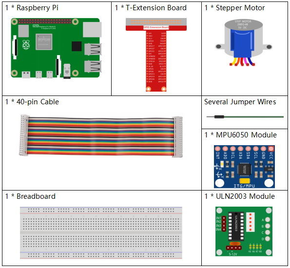
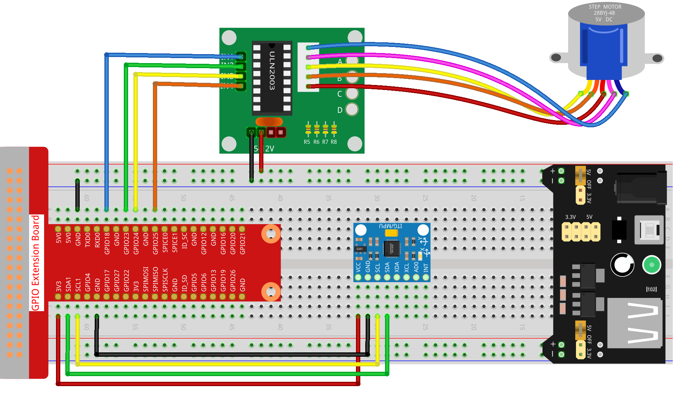

Note
Bonjour, bienvenue dans la communauté SunFounder dédiée aux passionnés de Raspberry Pi, Arduino et ESP32 sur Facebook ! Plongez plus profondément dans l’univers du Raspberry Pi, de l’Arduino et de l’ESP32 avec d’autres passionnés.
Pourquoi rejoindre ?
Support d’experts : Résolvez les problèmes après-vente et les défis techniques grâce à l’aide de notre communauté et de notre équipe.
Apprendre & Partager : Échangez des conseils et des tutoriels pour perfectionner vos compétences.
Aperçus exclusifs : Accédez en avant-première aux annonces de nouveaux produits et aux aperçus exclusifs.
Réductions spéciales : Profitez de réductions exclusives sur nos nouveaux produits.
Promotions et tirages au sort festifs : Participez à des tirages au sort et des promotions spéciales lors des fêtes.
👉 Prêt à explorer et à créer avec nous ? Cliquez sur [Ici] pour nous rejoindre dès aujourd’hui !
3.1.6 Contrôle de Mouvement
Introduction
Dans cette leçon, nous allons créer un dispositif simple de détection et de contrôle de mouvement. Le capteur MPU6050 sera utilisé comme détecteur et le moteur pas à pas comme appareil contrôlé. Avec le MPU6050 monté sur un gant, vous pouvez contrôler le moteur pas à pas en tournant votre poignet.
Composants Nécessaires
Dans ce projet, nous aurons besoin des composants suivants :
{kind=link}
Schéma de Connexion
T-Board Name |
physical |
wiringPi |
BCM |
GPIO18 |
Pin 12 |
1 |
18 |
GPIO23 |
Pin 16 |
4 |
23 |
GPIO24 |
Pin 18 |
5 |
24 |
GPIO25 |
Pin 22 |
6 |
25 |
SDA1 |
Pin 3 |
||
SCL1 |
Pin 5 |
Procédures Expérimentales
Étape 1 : Construisez le circuit.
Étape 2 : Ouvrez le fichier du code.
cd ~/davinci-kit-for-raspberry-pi/python-pi5
Étape 3 : Exécutez le programme.
sudo python3 3.1.6_MotionControl.py
Lorsque le programme est exécuté, si l’angle d’inclinaison du mpu6050 sur l’axe Y axis est supérieur à 45 ℃, le moteur pas à pas tourne dans le sens antihoraire ; s’il est inférieur à -45 ℃, le moteur pas à pas tourne dans le sens horaire.
Avertissement
Si le message d’erreur RuntimeError: Cannot determine SOC peripheral base address s’affiche, veuillez vous référer à Si gpiozero ne fonctionne pas.
Code
Note
Vous pouvez Modifier/Réinitialiser/Copier/Exécuter/Arrêter le code ci-dessous. Mais avant cela, vous devez vous rendre dans le chemin source du code tel que davinci-kit-for-raspberry-pi/python-pi5. Après avoir modifié le code, vous pouvez l’exécuter directement pour voir l’effet.
#!/usr/bin/env python3
from gpiozero import OutputDevice
import smbus
import math
import time
# Initialisation des registres de gestion de l'alimentation pour le MPU6050
power_mgmt_1 = 0x6b
power_mgmt_2 = 0x6c
# Configuration de la communication I2C avec le MPU6050
bus = smbus.SMBus(1) # Initialiser le bus SMBus
address = 0x68 # Adresse I2C du MPU6050
bus.write_byte_data(address, power_mgmt_1, 0) # Réveiller le MPU6050
# Initialisation des broches du moteur sur les broches GPIO 18, 23, 24, 25
motorPin = [OutputDevice(pin) pour pin dans (18, 23, 24, 25)]
# Paramètres de vitesse de rotation du moteur
rolePerMinute = 15
stepsPerRevolution = 2048
# Calcul du délai entre les étapes pour atteindre la vitesse souhaitée
stepSpeed = (60 / rolePerMinute) / stepsPerRevolution
# Lecture d'un octet depuis l'adresse I2C spécifiée
def read_byte(adr):
return bus.read_byte_data(address, adr)
# Lecture d'un mot (2 octets) depuis l'adresse I2C spécifiée
def read_word(adr):
high = bus.read_byte_data(address, adr)
low = bus.read_byte_data(address, adr + 1)
val = (high << 8) + low
return val
# Lecture d'un mot en format de complément à 2
def read_word_2c(adr):
val = read_word(adr)
if val >= 0x8000:
return -((65535 - val) + 1)
else:
return val
# Calcul de la distance euclidienne entre deux points
def dist(a, b):
return math.sqrt((a * a) + (b * b))
# Calcul de la rotation autour de l'axe Y
def get_y_rotation(x, y, z):
radians = math.atan2(x, dist(y, z))
return -math.degrees(radians)
# Calcul de la rotation autour de l'axe X
def get_x_rotation(x, y, z):
radians = math.atan2(y, dist(x, z))
return math.degrees(radians)
# Récupération de l'angle d'inclinaison depuis le MPU6050
def mpu6050():
accel_xout = read_word_2c(0x3b)
accel_yout = read_word_2c(0x3d)
accel_zout = read_word_2c(0x3f)
accel_xout_scaled = accel_xout / 16384.0
accel_yout_scaled = accel_yout / 16384.0
accel_zout_scaled = accel_zout / 16384.0
angle = get_y_rotation(accel_xout_scaled, accel_yout_scaled, accel_zout_scaled)
return angle
# Contrôle de la rotation du moteur pas à pas
def rotary(direction):
if direction == 'c':
# Séquence de rotation dans le sens horaire
for j in range(4):
for i in range(4):
if 0x99 >> j & (0x08 >> i):
motorPin[i].on()
else:
motorPin[i].off()
time.sleep(stepSpeed)
elif direction == 'a':
# Séquence de rotation dans le sens antihoraire
for j in range(4):
for i in range(4):
if 0x99 << j & (0x08 >> i):
motorPin[i].on()
else:
motorPin[i].off()
time.sleep(stepSpeed)
# Boucle principale pour la lecture continue de l'angle et le contrôle du moteur
try:
while True:
angle = mpu6050()
if angle >= 45:
rotary('a') # Rotation antihoraire pour une inclinaison positive
elif angle <= -45:
rotary('c') # Rotation horaire pour une inclinaison négative
except KeyboardInterrupt:
# Éteindre toutes les broches du moteur lors d'une interruption clavier
for pin in motorPin:
pin.off()
Explication du Code
Le script commence par importer les bibliothèques nécessaires.
gpiozeropour contrôler les broches GPIO,smbuspour la communication I2C,mathpour les opérations mathématiques, ettimepour gérer les délais.#!/usr/bin/env python3 from gpiozero import OutputDevice import smbus import math import time
Configure la communication I2C avec le capteur MPU6050. Les registres
power_mgmt_1etpower_mgmt_2gèrent l’alimentation du capteur. Le capteur est « réveillé » en écrivant danspower_mgmt_1.# Initialisation des registres de gestion de l'alimentation pour le MPU6050 power_mgmt_1 = 0x6b power_mgmt_2 = 0x6c # Configuration de la communication I2C avec le MPU6050 bus = smbus.SMBus(1) # Initialisation du SMBus address = 0x68 # Adresse I2C du MPU6050 bus.write_byte_data(address, power_mgmt_1, 0) # Réveil du MPU6050
Initialise les broches GPIO (18, 23, 24, 25) du Raspberry Pi pour contrôler le moteur pas à pas. Chaque broche est associée à une bobine du moteur.
# Initialisation des broches du moteur sur les broches GPIO 18, 23, 24, 25 motorPin = [OutputDevice(pin) pour pin dans (18, 23, 24, 25)]
Définit les paramètres de rotation du moteur (tours par minute) et le nombre de pas par révolution.
stepSpeedcalcule le délai entre chaque pas pour atteindre la vitesse souhaitée, garantissant ainsi un fonctionnement fluide du moteur.# Paramètres de vitesse de rotation du moteur rolePerMinute = 15 stepsPerRevolution = 2048 # Calcul du délai entre les pas pour atteindre la vitesse souhaitée stepSpeed = (60 / rolePerMinute) / stepsPerRevolution
Ces fonctions sont utilisées pour la communication I2C.
read_bytelit un octet à partir d’une adresse donnée, tandis queread_wordlit deux octets (un mot), les combinant en une seule valeur avec des opérations sur les bits (<<et+).# Lire un octet depuis l'adresse I2C spécifiée def read_byte(adr): return bus.read_byte_data(address, adr) # Lire un mot (2 octets) depuis l'adresse I2C spécifiée def read_word(adr): high = bus.read_byte_data(address, adr) low = bus.read_byte_data(address, adr + 1) val = (high << 8) + low return val
Cette fonction convertit le mot lu en complément à 2, utile pour interpréter les valeurs signées des données du capteur. Cette conversion est nécessaire pour gérer les lectures négatives du capteur.
# Lire un mot en format complément à 2 def read_word_2c(adr): val = read_word(adr) if val >= 0x8000: return -((65535 - val) + 1) else: return val
distcalcule la distance euclidienne entre deux points, utilisée dans les calculs de rotation.get_y_rotationetget_x_rotationcalculent les angles de rotation le long des axes Y et X respectivement, en utilisant la fonctionatan2de la bibliothèquemathet en convertissant le résultat en degrés.# Calcul de la distance euclidienne entre deux points def dist(a, b): return math.sqrt((a * a) + (b * b)) # Calcul de la rotation sur l'axe Y def get_y_rotation(x, y, z): radians = math.atan2(x, dist(y, z)) return -math.degrees(radians) # Calcul de la rotation sur l'axe X def get_x_rotation(x, y, z): radians = math.atan2(y, dist(x, z)) return math.degrees(radians)
Cette fonction lit les données de l’accéléromètre du capteur MPU6050, les met à l’échelle, et calcule l’angle d’inclinaison en utilisant la fonction
get_y_rotation. La fonctionread_word_2clit les données du capteur en format complément à 2 pour gérer les valeurs négatives.# Récupération de l'angle d'inclinaison depuis le MPU6050 def mpu6050(): accel_xout = read_word_2c(0x3b) accel_yout = read_word_2c(0x3d) accel_zout = read_word_2c(0x3f) accel_xout_scaled = accel_xout / 16384.0 accel_yout_scaled = accel_yout / 16384.0 accel_zout_scaled = accel_zout / 16384.0 angle = get_y_rotation(accel_xout_scaled, accel_yout_scaled, accel_zout_scaled) return angle
La fonction
rotarycontrôle la rotation du moteur pas à pas. Elle exécute une séquence de pas pour une rotation horaire ou antihoraire, selon le paramètredirection. La séquence implique l’activation ou la désactivation de broches spécifiques du moteur dans un certain ordre.# Contrôle de la rotation du moteur pas à pas def rotary(direction): if direction == 'c': # Séquence de rotation horaire for j in range(4): for i in range(4): if 0x99 >> j & (0x08 >> i): motorPin[i].on() else: motorPin[i].off() time.sleep(stepSpeed) elif direction == 'a': # Séquence de rotation antihoraire for j in range(4): for i in range(4): if 0x99 << j & (0x08 >> i): motorPin[i].on() else: motorPin[i].off() time.sleep(stepSpeed)
La boucle principale lit continuellement l’angle d’inclinaison depuis le capteur MPU6050 et contrôle la direction de rotation du moteur en fonction de l’angle. Si le programme est interrompu (par ex., via un clavier), il désactive toutes les broches du moteur par sécurité.
# Boucle principale pour la lecture continue de l'angle et le contrôle du moteur try: while True: angle = mpu6050() if angle >= 45: rotary('a') # Rotation antihoraire pour une inclinaison positive elif angle <= -45: rotary('c') # Rotation horaire pour une inclinaison négative except KeyboardInterrupt: # Désactiver toutes les broches du moteur en cas d'interruption for pin in motorPin: pin.off()